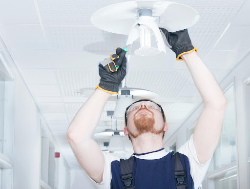

To get off the ground and find a need worth addressing for Lutron, our team conducted a series of interviews with a variety of users. We scripted loose protocols based around several main themes (automation, Lutron customer service, lighting needs in their home), and adapted them for each type of user we interviewed. Among the users we spoke to were Lutron certified installers, Lutron Caseta customers, realtors with smart home experience, and retail workers. While many of these interviews were conducted remotely over the phone and Zoom, I managed to conduct some street research (or guerilla research) to better understand customers’ thoughts during the point of sale in the retail environment.
